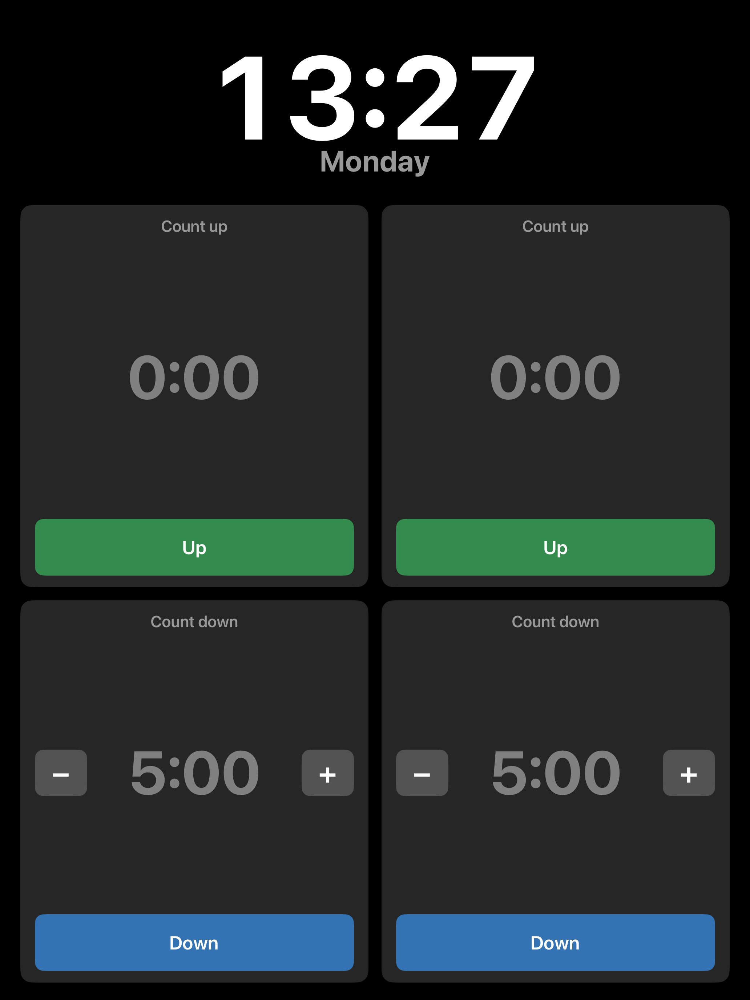
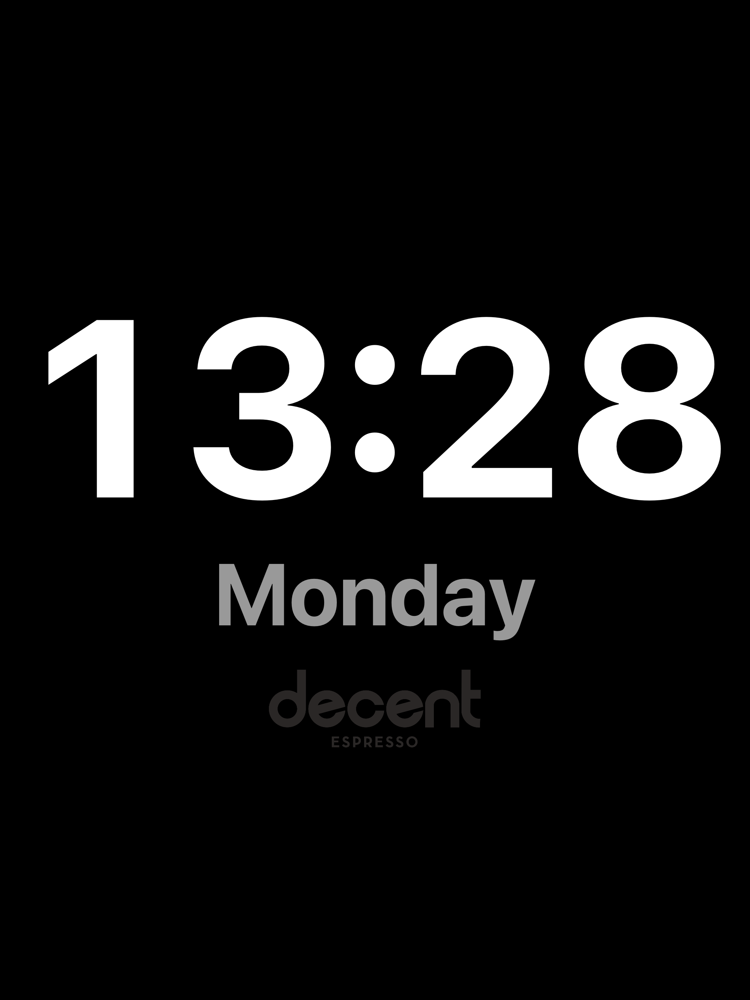

What it is
A kitchen counter-top timer for iPad: four timers on one screen (two count up, two count down), a large always-on clock with the weekday, and a full-screen clock/screensaver for when it is idle. Large numbers, large buttons, and the screen never sleeps.
Two builds, one codebase
Objective-C, programmatic UIKit (no storyboards). One source tree with two build targets; the
modern-only scene lifecycle is #if-guarded so the same files compile for both:
- iOS 9 / 32-bit (armv7) — for the original iPad mini 1 (iPad2,5, iOS 9.3.5), distributed by jailbreak sideload.
- Modern (arm64) — for any current iPad, plus Mac Catalyst; App Store or sideload (AltStore / SideStore / SideStep).
Features
- Live clock (
H:mm) and weekday at the top, auto-shrinking to fit. - Four timers: two count up, two count down. A running count-up shows "Started at H:mm"; a
count-down shows "Started at H:mm, ETA H:mm", with the ETA recomputed each tick. Values read
MM:SS, rolling toH:MM:SSpast an hour; grey when idle, white when running, orange in overtime. - Set a duration two ways: the
–/+buttons (press and hold to change faster), or tap an un-started timer to open a full-screen keypad with smart parsing ("1.5h" → 1:30:00, "90s" → 1:30). - Overtime counts negative, the background pulses, and it dings every 5 seconds until stopped.
- Screensaver: tap the clock, or automatically after an hour idle (never while a timer is running); shows the time, weekday, and a faint logo that drifts to avoid burn-in.
Screenshots


Install
Install the modern (arm64) build onto an iPad directly from a Mac. The button installs SideStep if it isn't already, then sideloads Decent Timer over USB. SideStep is a Mac app, so run this on a Mac with the iPad plugged in.
Repository
Source: github.com/johnbuckman/Kitchen-timer-for-old-iPads.
Prebuilt installers are attached as GitHub releases: an arm64 sideload .ipa for modern
iPads, and an armv7 tarball for the jailbroken iOS 9 build.